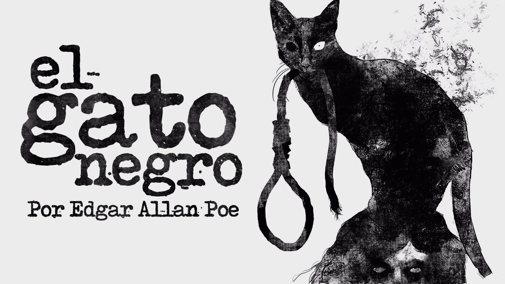
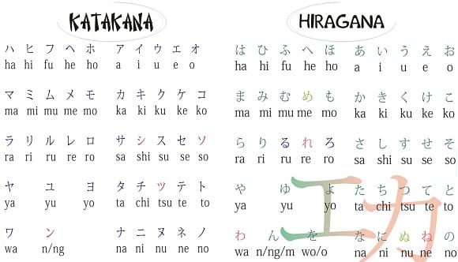
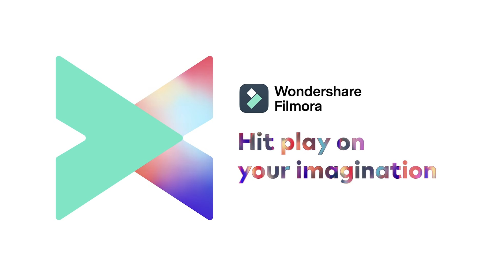

Front End
HTML
CSS
JavaScript
¿Porqué me gusta programar?

Mi gusto por la programacion y el desarrollo de software nace cuando yo cursaba el 7mo año de educacion, en el momento que asistí a una exposicion sobre la tecnologio y los avances tecnologicos actuales.
Desde ese día puse un mi mente la meta de llegar a ser parte de las personas que contribuyen a diario con los avances en la tecnologia.
Estudiar Desarrollo de Software es el primer paso para ser parte de esta sociedad tecnologica que crece día a día, ya que luego de terminar de estudiar mecatronica para complementar mis conocimientos en software con conocimientos en hardware.
Hobbies
Gaming
En mis tiempos libres para despejar un poco la mente juego Honkai Impact por un momento ya que tengo otros hobbies aparte de este.
Lectura
Además de jugar me entretengo mayormente con la lectura de historias paranormales y/o de terror por ejemplo la obra titulada "El Gato Negro" del maestro Edgar Allan Poe.
Idiomas
Y para finalizar pero no menos importante tambien disfruto de aprender otro tiempos de idiomas como por ejemplo el japonés.
Cursos realizados
Curso de Photoshop básico y medio
Tengo amplio conocimientos en lo que es edicion de imagenes con el programa Adobe Photoshop, como por ejemplo diseño de folletos, invitaciones banners, propagandas de productos, entre otros.
Curso de Edicion de video básico y medio
Conocimientos en edicion de video medio con el programa Wondershare Filmora como puede ser edicion de video para promocionar algun producto y/o servicio y todo lo relacionado con edicion de video para distintas plataformas.